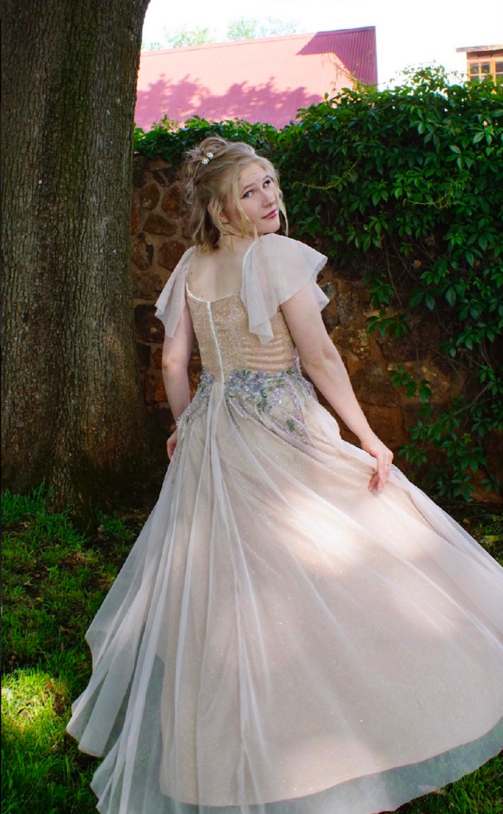
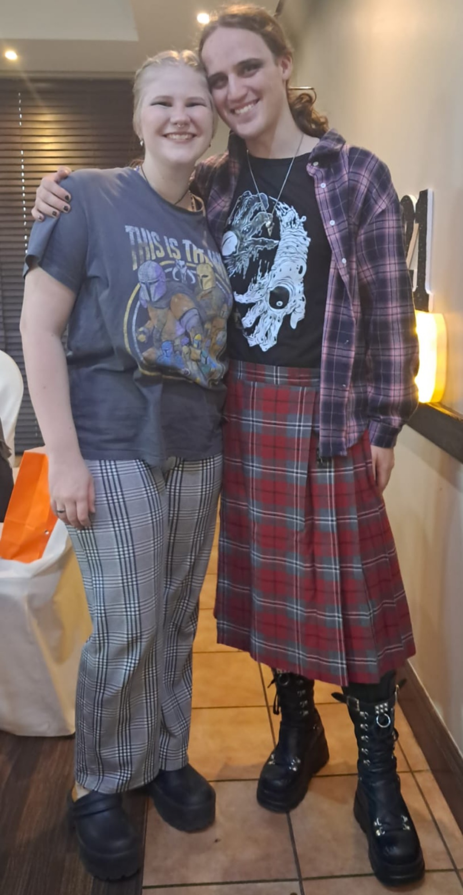
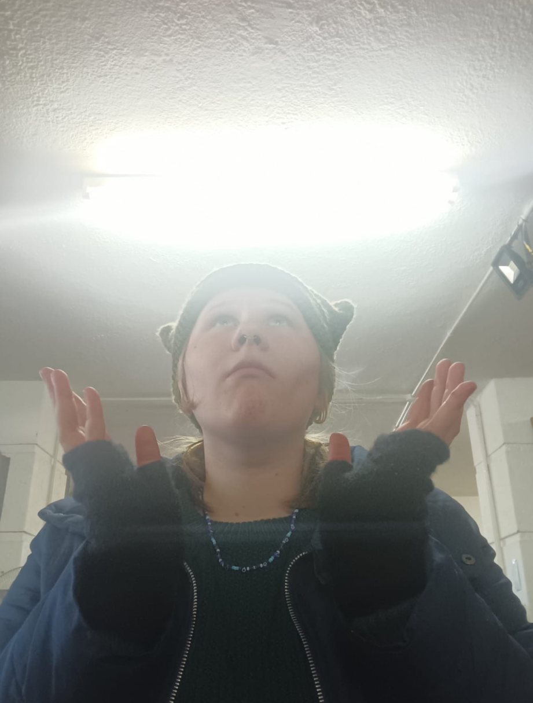
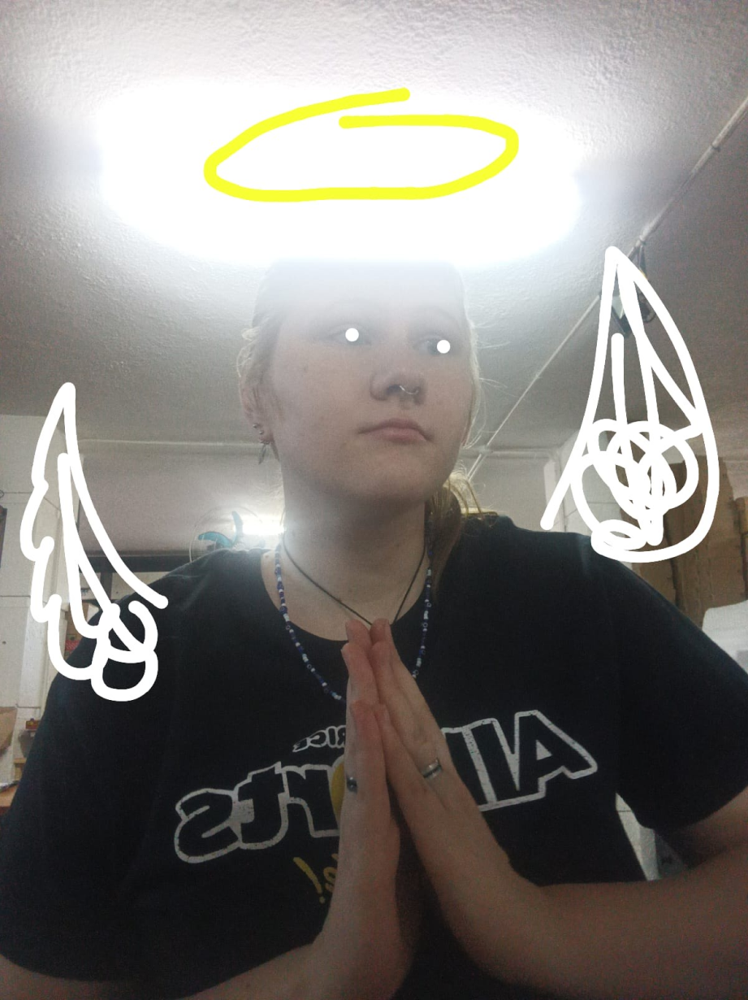
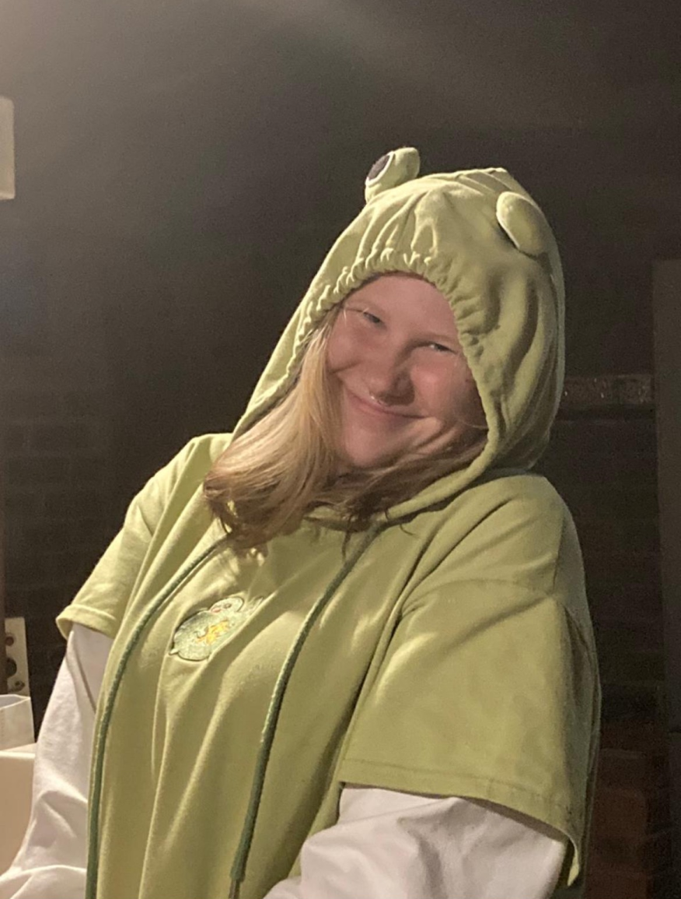
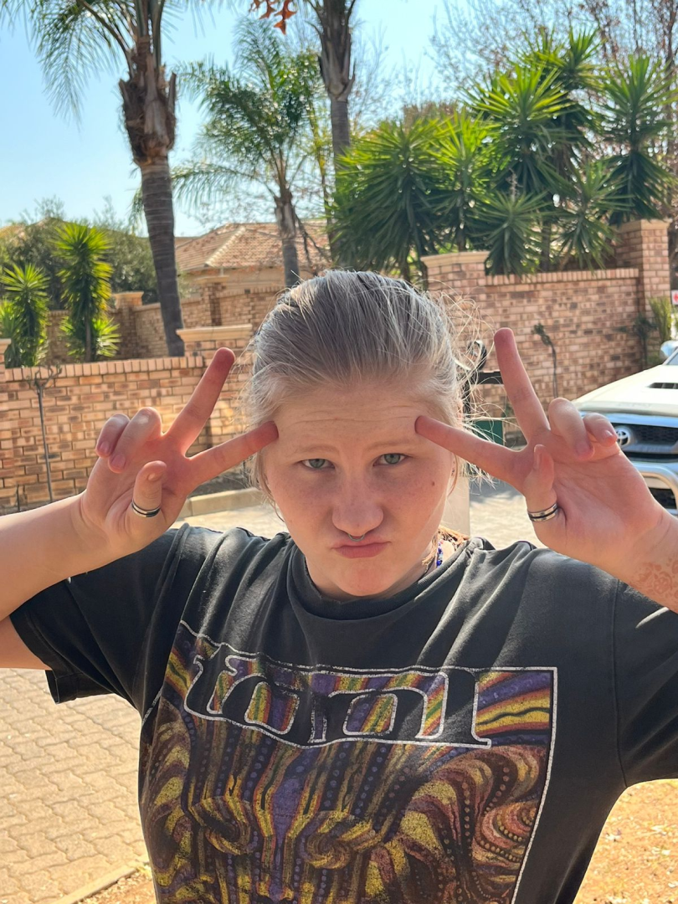
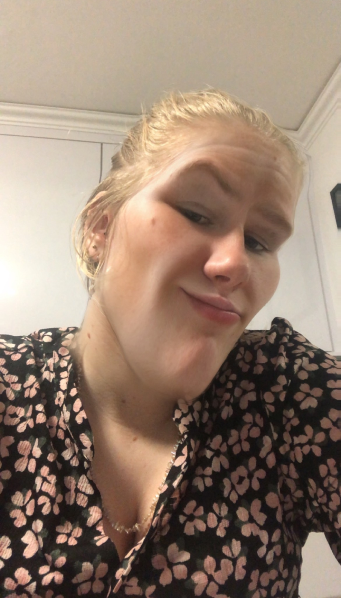
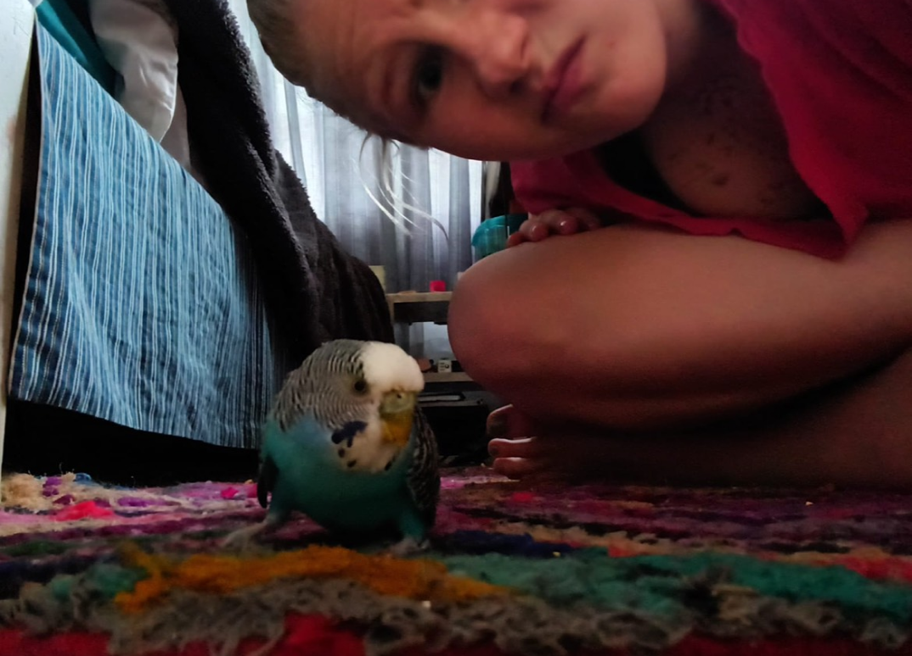
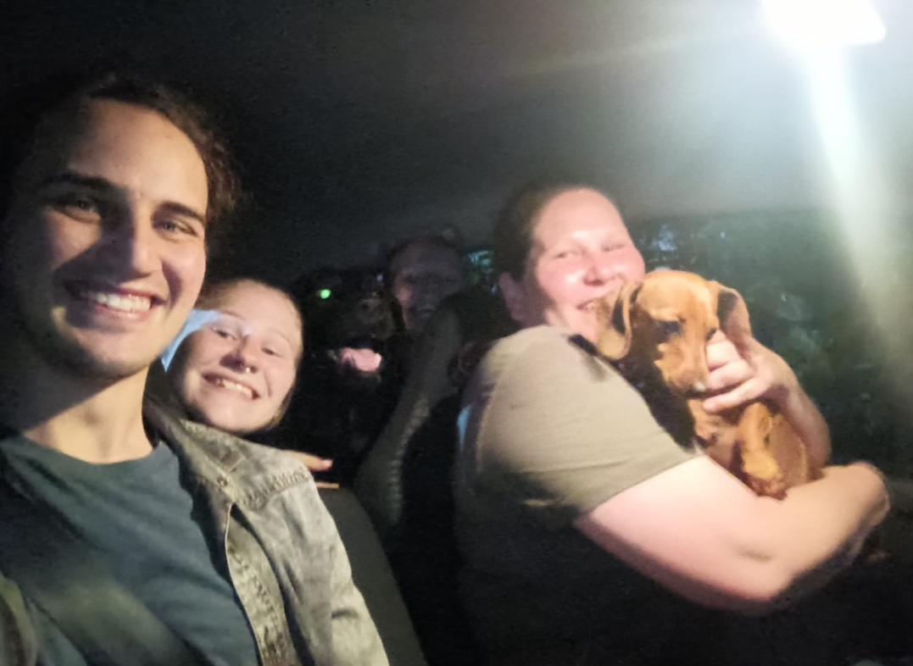

Babi Man.
Ek het die week weer die agterkant gelees van die balllerina wat jy vir my gegee het. Ek
het vergeet hoe lank terug ek jou my LOML genoem het, so ek wil jou herrinder dat jy rerig waar my loml is.
Ek luister na ons playlist soos wat ek die skryf. Ek het altyd van Oktober gehou, maar jy het dit
soveel belangriker gemaak vir my as wat dit was. Jy herrinder my aan herfs - die wêreld draai stadiger soos
wat dit soveel mooier raak. Wat ek bedoel is dat jy my wêreld maak stadiger draai wanneer ek jou sien. Soos
die blare wat kleur verander en my mesmerize, mesmerize jou beauty vir my.
Jou beauty is soos
herfs, en jou oë is soos 'n Evergreen Forest. 'n Galaxy wat in bestaam kom:
"In jou gesig is n sterrestelsel - Ek is n kind wat na die sterre kyk."
Jou oë gaan ek nooit vergeet nie. Kuns kan nie beskryf hoeveel prag jy in jou oë het nie. Dit wys die liefde en lewe wat om jou brand:
"Die Hemel is silwer, en jy is 'n storm van goud."
Ek raak al emosioneel wanneer ek dink oor alles wat ek vir jou wil doen.
"As die storm weer begin sanik, die berge brand en die bome omwaai. En as die vlamme aan my gordyn weer lek, dan skryf ek vir ons n nuwe plek."
Daai liedjie beskryf hoe ek voel - my keel trek styf wanneer ek dink aan hoeveel jy vir my beteken. Ek kan
vir jou vir ewig vertel daarvan: "Komma, Komma, Komma Weer". As ek vir jou wil vertel wat jy vir my beteken
sou ek vir ewig kommas moes gebruik want jy is perfek in my oë.
Party keer kort ek nie woorde wat
vir ewig aan gaan nie. Dis hoekom ek dié gemaak het. Dié gaan vir ewig staan as 'n monument na ons en ons
liefde. Jy sal enige tyd dit sal kan sien en vind.
Ek lief jou ongelooflik baie.
"We fell in love in October, that's why I love fall."
My babi is die mooiste persoon wat bestaan
EN JOU SMILE OMG EK KANI EERS NIE
Jou smile is so amazing ek vergaannnnn
En jy is beautiful
Charming
En baie slim
Jy is ook altyd daar vir my, en ek dink dit maak jou die super beste
Not to mention, jy is jesus (my references is altyd on point 👉👉)
Soos letterlik jy is actually divine
En jy is so fuckin cute en mooi, elke keer wat ek jou sien dink ek net "wow, ek is so lucky"
Ek dink jy is straight up die mooiste persoon wat bestaan ngl
Soos kyk net hier
Jy is ook n total chad
Jy is ook so amazing met makeup, en so caring met my
Jy het ook 'n super cool ability om diere te maak chill by jou
En lastly, n foto wat vir ons beide baie special is.
Dit was baie fun om met jou rond te ry op nuwe jaars. Jy is rerig die lig van my lewe, en ek is so ongelooflik baie lief vir jou.
Woorde kan nie beskryf hoe trots ek is op jou nie. Jy is so ongelooflik slim dat ek net kan se ek is trotas op wie jy is en alles wat jy al accomplish het. Jy maak my trots om te se jy is my partner, en ek sal nooit dissappointed kan wees in jou nie. Jy is rerig iemand wat ek na op kyk met jou deursettingsvermoë en jou ability om complex goed net te kan verstaan. Jy is rerig die beste babi.